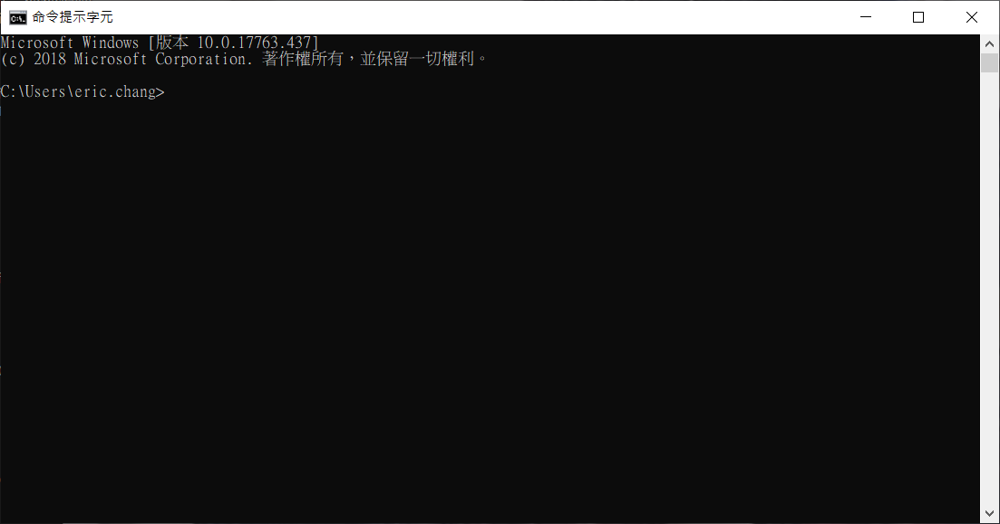

[CMD Tutorial 1⁄4] What is Windows Command Prompt?
Windows Command Prompt
在Windows被發明之前，當時主流的電腦作業系統是 MS-DOS (Microsoft Disk Operating System)，以文字下命令的方式跟電腦溝通。雖然沒有圖形化介面友善，但其實主流的電腦作業系統熟悉MS-DOS命令的人，能夠飛快地打字，迅速地做很多事情。例如刪除一個檔案，Windows 需要叫出檔案管理員，用滑鼠找到該檔案，按右鍵，選刪除，如果在 DOS 環境，敲鍵盤 “del
到現在，大部分使用者偏好這種幾乎不用學習的圖形化介面，日常生活操作也幾乎都能用圖形化介面完成，文字介面就很少人用了。大概只剩下少數場合，例如學習程式設計，撰寫程式碼仍然利用圖形化介面的文字編輯器，可是編譯程式碼、執行，使用 Command Prompt 會比較方便。
那在Windows 10環境，如何執行 Command Prompt呢? 在左下角搜尋功能裡面打 “CMD” ，系統會找出”命令提示字元” ，執行該命令，就進入了command line模式了。如果近期內會常用 CMD，可以釘選到工具列，比較方便。

進入 Command Prompt 後，通常會先打個 DIR ，看看有哪些檔案，位於什麼路徑。
c:\> dirDIR 其實有很多參數可做變化，例如列出隱藏檔、用別的欄位排序顯示等，詳細用法可以用 Help DIR 來看。其他命令也可以用 “HELP
c:\> help dir
顯示檔案清單以列出目錄中的檔案及子目錄。
DIR [drive:][path][filename] [/A[[:]attributes]] [/B] [/C] [/D] [/L] [/N]
[/O[[:]sortorder]] [/P] [/Q] [/R] [/S] [/T[[:]timefield]] [/W] [/X] [/4]
[drive:][path][filename]
指定要顯示的磁碟機、目錄或檔案。
/A 顯示具有指定之屬性的檔案。
attributes D 目錄 R 唯讀檔案
H 隱藏檔案 A 待封存檔案
S 系統檔案 I 非內容索引檔案
L 重新分析點 O 離線檔案
- 首碼表示否定
/B 使用單純格式 (沒有標頭資訊或摘要)。
/C 在檔案大小中顯示千位分隔符號。這是預設值。使用 /-C 可停用
分隔符號的顯示。
/D 與寬的列表格式相同，但是依照欄來排序。
/L 使用小寫顯示。
/N 使用新的長列表格式，檔名會顯示在最右方。
/O 依照指定的排序順序來列出檔案。
sortorder N 依名稱 (英文字母) S 依大小 (最小的在前)
E 依副檔名 (英文字母) D 依日期/時間 (日期較早的在前)
G 先列出子目錄 - 首碼表示相反的順序
/P 當資料填滿整個螢幕時暫停顯示。
/Q 顯示檔案擁有者。
/R 顯示檔案的替代資料流。
/S 顯示指定目錄及所有子目錄中的檔案。
/T 控制用來顯示或排序的時間欄位
timefield C 建立
A 上次檔案存取時間
W 上次寫入檔案時間
/W 使用寬的列表格式。
/X 顯示對非 8.3 格式的檔案產生的短檔名。
這個格式和 /N 相同，但是短檔名會插入
在長檔名之前。如果沒有短檔名存在，
該處會顯示空白。
/4 顯示四位數的年份
參數可能會在 DIRCMD 環境變數預先設定。您可以在任何參數使用連字號字首(-)
來覆蓋預先的設定--例如: /-W。通常沒那麼剛好，”命令提示字元”預設的路徑就是接下來要工作的目錄，因此要先切換磁碟機，再切換路徑。
c:\> d:
d:\> cd \prj然後就可以開始工作了。